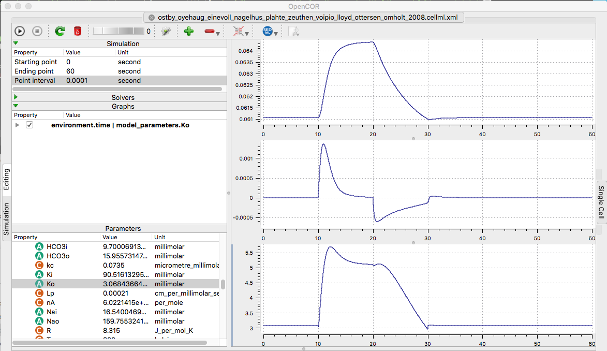

Ostby I, Oyehaug L, Einevoll GT, Nagelhus EA, Plahte E, Zeuthen T, Lloyd CM, Ottersen OP, Omholt SW Astrocytic mechanisms explaining neural-activity-induced shrinkage of extraneuronal space. PLoS Comput Biol 5:e1000272[PubMed]
is available at the cellml.org website: https://models.cellml.org/exposure/d9de93b128da322a4d50f24589980ea1/ostby_oyehaug_einevoll_nagelhus_plahte_zeuthen_voipio_lloyd_ottersen_omholt_2008.cellml/view Example: Running the model in opencor after changing the ending point to 60 seconds and creating (+) three graphs and then adding plots to each graph by right-clicking the wi.wi, wi.wi', and model_parameters.Ko (selecting Plot against integration variable for each) creates the following graphs qualitatively similar to those in Fig 5A: 